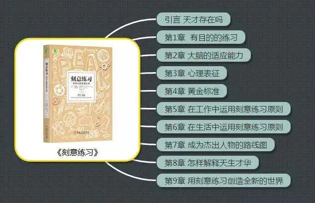

让挑战和成长变得更加快乐
每一个人都喜欢舒适区，总想尽可能拒绝改变、拒绝挑战，这样确实挺快乐。 但前提是看不到更快乐的生活、不会激起内心的羡慕甚至是嫉妒恨，当然，最重要的是要有足够抵御风险的底气、不会因担心未来而焦虑。 但显然上面说的几个太难太难，所以一直待在舒适区几乎是不现实的事情。挑战一定会到来，无非主动还是被动。 如何克服人的惰性，能够更加积极地主动挑战，不断扩大自己的舒适圈，甚至让挑战变成享受呢？ 小镇上周末读了一本书，叫《刻意练习》，书中的观点引起了小镇的一些共鸣。

当人面对的挑战越大、大脑的变化也就越大，学习更加高效、进步也更快。 但人的能力和适应水平需要一个提升过程。就好比玩游戏，如果刚出新手村就要面对最终大BOSS，这不叫挑战，这叫自杀。但好在现实一般会给很多时间，让我们慢慢提高自己。 倘若能够把挑战和努力变得开心甚至幸福，让人追求开心的天性激励我们不断放大挑战，获得更多满足感和成就感，那成长就在潜移默化之中。
核心就是如何以一个机制让人慢慢的适应挑战，不断放大挑战，这就进入了一个非常好的状态。
本书作者将这种状态命名为“甜蜜点”，简单地说就是把挑战或者想要实现的目标定的比较小、更加适合自己目前的状态，比如在自己的舒适区之外，手伸一下就能够到，然后慢慢的扩大舒适区，这就会让人很舒服。 假如定的目标过大，远远超过自己当前的能力，又或者需要太过漫长的持续努力，当努力很久也看不到成功的可能，这就会陷入书中说的“恐怖区”，一旦如此，人就会抗拒、甚至堕落。 举一个例子，比如有一些人，无论男女，在很年轻的时候定下的目标就是发财致富，但是如何实现发财致富并没有规划，那么努力一段时间完全没有感觉距离目标更近，人急了就可能走邪路，比如出卖自己的肉体、尊严乃至生命等等。
再举一个更通俗的例子，就拿小镇的公众号来说。 小镇有几个大目标，比如成为公众号500强，比如持续分享至少20年。但这都是最终的宏大目标，但如果小镇天天想这个，又如何能坚持下去？ 所以小镇实际定了非常多的小目标：比如坚持每天双更，能坚持多久坚持多久；比如多看一本书、多听一个讲座、多研究明白一个此前不了解的问题等等。
将大目标不断拆解成一个个触手可及的小目标。每一点都不大，但是正因为不难，所以能够获得持续的满足，而满足感就是成就感的一种，让努力的效果更加可以衡量、努力的过程更加开心，我们才能日复一日的坚持。
剩下的，相信时间的力量。
今日推书：
《刻意练习》这本书有兴趣的话可以读一读，但核心观点就是上面讲到的，其他就是更多的举例和论证。终归还是要每个人结合自己的情况，自己思考和行动。
其他文章推荐
■ 打人如走路
■ 2022年中国房地产政策、房价及个人选择
如果喜欢，还请点赞、“在看”和关注吧 欢迎分享，让更多人发现“大树乡谈”